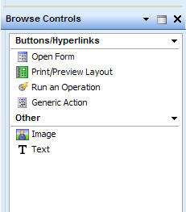
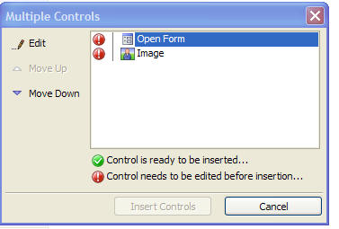
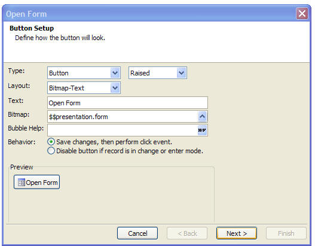
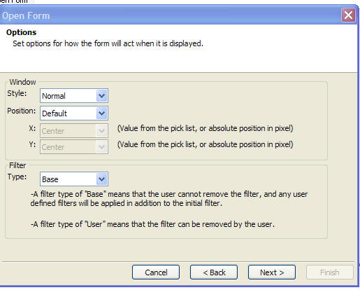
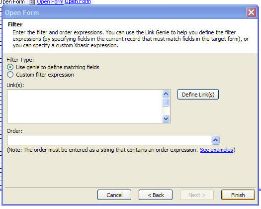
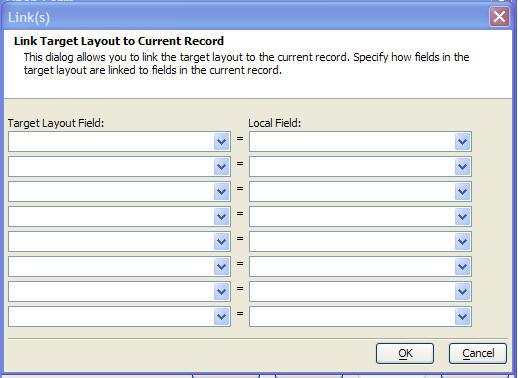
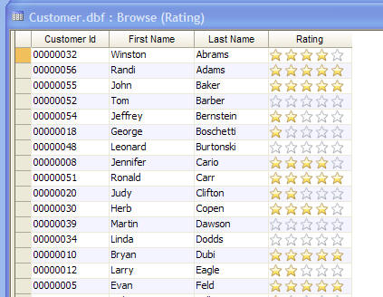
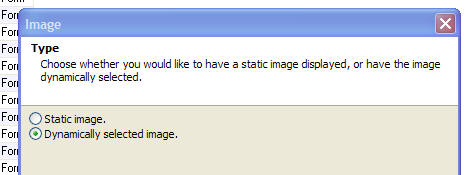
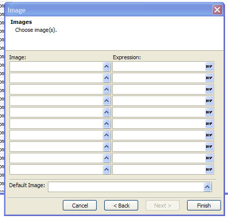

Browse Controls (From V9)
When you are editing a Browse Layout (both stand-alone browses, and embedded browses), a new toolbox is available. The toolbox allows you to more easily insert buttons and images in browse cells.
New genies make it particularly easy to insert buttons for common tasks, such as opening a form to show more detail for the current row, printing a report that is filtered on the current row, or running an operation that is filtered on the current row.
Note: If you don't see the Browse Controls toolbox, select the Task Lists, Browse controls menu entry.
|
 |
|
Browse Controls toolbox makes it easy to place buttons and images in browse cells. |
Summary of Browse Controls
| Browse Control Name | Description |
| Open Form | Put a button or hyperlink in a browse cell to open a new form. This form will often be filtered so that it shows the same record as the current browse record. This action is commonly used to open a form that shows more detail for the current record. |
| Print/Preview Layout | Put a button or hyperlink in a browse cell to print or preview a layout. The layout will often be filtered so that it shows the same record as the current browse record. |
| Run an Operation | Put a button or hyperlink in a browse cell to run a saved Operation. |
| Generic Action | Put a button or hyperlink in a browse cell to run any Xbasic code. |
| Image | Put an icon in a browse cell. The icon is typically dynamically selected based on some value in the current record. For example, if you have a browse showing a list of customers with credit ratings between 1 and 5, you could dynamically select a different icon for each customer, based on their credit rating. |
| Text | Put some text in a browse cell. The text can either be static, or dynamic, based on some value in the current record. |
Placing a Browse Control in a Browse Layout
To place a Browse Control in a Browse layout, simply drag the control from the toolbox and drop it in the Browse layout. A genie will be displayed, allowing you to define the control. When you complete the last step of the genie, Alpha Anywhere will add a new column to the browse. Unlike regular browse columns, which are all bound to either physical fields, or calculated fields, a browse column created by dropping a Browse Control onto a browse will be bound to a new type of field called 'SYSTEM->Unbound'. Alpha Anywhere will create a default title for the new column, but you will probably want to change the title by right clicking on the title and selecting 'Properties'.
Note: If you are editing a Form layout, you can only drop Browse Controls in embedded browses on the form. You will notice that if you try to drag a Browse Control and drop it on a Form (outside of any embedded Browses on the form), Alpha Anywhere will prevent the action.
A browse cell can contain more than one Browse Control. If you want to place multiple Browse Controls in a cell (for example say you wanted both an Image and a Text control), you can select multiple controls in the toolbox and drag them to the Browse layout. The 'Multiple Controls' dialog will appear, allowing you to define each of the individual controls. Once you have finished defining each control, the 'Insert Controls' button will become enabled and you can click it to insert the controls into the Browse layout.
|
 |
|
You can place more than one Browse Control in a
single cell. When you |
Editing the Code for a Browse Control
Most of the Browse Controls have associated Xbasic code that is executed when the control is clicked. The only exceptions are the 'Image' and 'Text' Browse Controls which do not have any associated event code. This Xbasic code is automatically generated by the Genie, but you might want to edit it.
The code for the Browse Controls is stored in the Browse object's 'Events' script. To edit the code associated with a Browse Control, right click on the column in the Browse and select Events... from the menu.
The Events script contains a series of functions of the form:
function <ObjectName>_Button
end function
Where <ObjectName> is the name of the column that contains the Browse Control.
For example, say you have placed an 'Open Form' Browse Control in one column of a Browse and a 'Print/Preview Layout' Browse Control in another column of a Browses. Assume that the object name of the first column is 'Action' and that the object name of the second column is 'Action1'. The 'Events' script for this browse will contain these functions:
function Action_Button
end function
function Action1_Button
end function
When you click the button in the first column, the 'Action_Button
'Open Form' Browse Control
The Open Form Browse control allows you to place a button or hyperlink in a browse cell to open another form. The target form will typically (although not necessarily) be filtered so that it shows the same record as the current browse record.
When you drop the Open Form control onto the Browse layout a genie with several screens is displayed. The first screen, shown below, allows you to define the appearance of the button. To display a hyperlink, set the button 'Type' to 'Hyperlink'.
Buttons and hyperlinks can be displayed with or without icons. Set the 'Layout' property to specify if the button will have an icon.
Several different border styles are available for buttons. Select the border style in the combo box to the right of the 'Type' property.
The 'Bubble Help' property allows you to specify bubble help that should appear when the mouse is over the button. The bubble help can be a dynamic expression. For example, you might define the following expression for bubble help:
"Open form to show detail for " + alltrim(firstname) + " " + alltrim(lastname)
If the current record in the browse has a value for 'firstname' of 'Michael' and 'lastname' of 'Jones', the bubble help for a button in this row will display:
"Open form to show detail for Michael Jones"
The 'Behavior' property allows you to specify what action to take if the current record is in change or enter mode. You can specify that the record should first be saved before the button's action is executed, or you can specify that the action should be aborted.
|
 |
|
The 'Open Form' genie allows you to define the appearance and action for the button that is placed in the Browse cell. |
The 'Options' page allows you to specify if the target form should be opened as a 'Normal' (i.e. modeless) window, or as a 'Dialog' (i.e. modal) window.
You can also specify where on the screen the target form should be opened. If you leave the 'Default' setting, the form will be opened in the position that was defined in the form editor.
You can also specify properties of the filter that is applied to the target form. Typically, you will select the 'Base' option if you are opening a form to display more information about the current record because you will not want your users to be able to remove the filter and start viewing other records in the table.
|
 |
|
This dialog allows you to set properties of the target form. |
The next screen allows you to specify how the target form will be filtered. Most commonly, you will want the target form to display more information about the current record and the 'Use genie to define matching fields' option will allow you to specify the relationship between the current record and the target form.
|
 |
|
Filtering the Target Form |
When you click the 'Define Link(s)' button, the genie is displayed where you can specify matching fields in the current record and in the table that that the target form is based on.
For example, say that the primary key for the current record is 'customer_id' and that the target form is based on the same table. You would enter 'customer_id' in the 'Target Layout Field' column, and in the 'Local Field' (i.e. fields from the current browse record) column.
|
 |
|
When you select the Link Genie, this dialog allows you to define how the target form is related to the current record in the browse. |
Watch a video demonstration of this feature
'Print/Preview Layout' Browse Control
The Print/Preview Layout Browse control allows you to place a button or hyperlink in a browse cell to print or preview a report, label or letter layout. The target report will typically (although not necessarily) be filtered on some value from the current record.
When you place this control on a Browse Layout a series of genies appear that are essentially identical to the Open Form Browse control, with the exception that you specify the report, label or letter to print or preview, rather than the form to open. See the Open Form Browse Control for more details.
'Run an Operation' Browse Control
The Run an Operation Layout Browse control allows you to place a button or hyperlink in a browse cell to run a previously created Operation that is based on the same table or set as the current browse. The Operation will typically (although not necessarily) be filtered on some value from the current record.
When you place this control on a Browse Layout a series of genies appear that are essentially identical to the Open Form Browse control, with the exception that you specify the Operation name, rather than the form to open. See the Open Form Browse Control for more details.
'Generic Action' Browse Control
When you place this control on a Browse Layout a series of genies appear that are essentially identical to the Open Form Browse control, with the exception that you specify the Xbasic to run, rather than the form to open. See the Open Form Browse Control for more details. You can either specify the Xbasic code directly, or you can specify the name of a saved Xbasic script.
To specify the Xbasic code that should be executed when the button is pressed, right click on the column title and select 'Events...' from the menu. See 'Editing the Code for a Browse Control' above for more information.
'Image' Browse Control
The 'Image' Browse Control allows you to place an image in a browse cell. The image can either be the same for every row, or it can be dynamically selected, based on the result of an expression that is evaluated using data from the current row.
Note: Contrast the 'Image' Browse Control with displaying an 'image field' in a browse. In the case of an image field, the table that the browse is based on has an image field (i.e. a Jpeg, Bitmap, or Image File Reference field), and placing that field in the browse layout will create a column in the browse that displays the image in the record. The 'Image' Browse Control, described here, is intended for placing icons in browse rows.
The following screen shows an example of a browse with an 'Image' Browse Control. The table has a 'rating' field with a value between 0 and 5 for every customer. Rather than showing the rating column as a number, we display an icon showing the customer rating.
|
 |
|
Browse showing an Image control in the Rating column. |
When you drop the 'Image' Browse Control on a Browse Layout, the first screen of the genie, shown below, allows you to specify if the same image will be used for every row, or if the image should be dynamically selected.
|
 |
|
The Image control can display a static or dynamic image. |
If you choose the 'Dynamically selected image' option, the next Genie screen allows you to specify different image names and the corresponding expression for each image.
The first image whose expression evaluates to .t. is displayed in the browse row.
|
 |
|
Specifying a dynamic image. |
For example, to set up the browse shown above with the ratings images, this screen was filled in as follows:
| Imge: | Expression |
| stars_0_of_5 | Rating=0 |
| stars_1_of_5 | Rating=1 |
| stars_2_of_5 | Rating=2 |
| stars_3_of_5 | Rating=3 |
| stars_4_of_5 | Rating=4 |
| stars_5_of_5 | Rating=5 |
Note: 'stars_0_of_5' etc. are built-in Alpha Anywhere images that can be found in the 'Addin Images' category when you click the button on the Image field in the above screenshot.
Watch a video demonstration of this feature.
'Text' Browse Control
The 'Text' Browse Control is similar to the 'Image' control. The difference is that instead of specifying an image to display, you specify some text to display. Like the 'Image' Browse Control, it allows you to specify static, or dynamic text. See the 'Image' Browse Control for more information.
Note: If you have a Browse Column that has just a 'Text' Browse Control in it (as opposed to a Browse column with an 'Image' Browse control and a 'Text' Browse control, for example), you should consider defining a calculated field to display the text. The primary motivation for creating the 'Text' Browse Control type is for situations where you place multiple Browse Controls into a single Browse column.